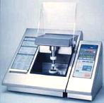

Decapsulation/Decapping/Delidding
Decapsulation is a
failure analysis step performed to open a
plastic
package to facilitate the inspection, chemical analysis, or
electrical examination of the die and the internal features of the package. If the package
being opened is
hermetic, then the process is referred to as 'delidding'
or 'decapping.' The
techniques used for decapsulation are very different from those of
delidding and decapping.
Delidding/decapping
is a purely
mechanical
process. It may refer to the prying of the combo lid off a ceramic
package, or the application of opposite torques to the top and bottom
parts of the ceramic DIP to break the seal glass, or the cutting of the
weld around a metal can.
On
the other hand, the more widely used plastic decapsulation techniques are
explained immediately below.
Manual
Chemical Etching
Manual
chemical etching consists of manually dispensing some acid on the surface
of a package to remove the plastic material covering the die.
Red fuming nitric acid (HNO3) or sulfuric acid (H2SO4) is often
used for this purpose. A
cavity is first milled on the top surface of the package.
Red fuming ntric acid heated to about 85-140 deg C or sulfuric acid
heated to 140 deg C is then repeatedly dropped into the cavity to remove
the plastic material covering the die.
When the die has been exposed adequately, the unit is rinsed with
acetone then with D/I water, before being blow-dried carefully.
Manual
etching may also refer to the process of soaking the package entirely in a
beaker of sulfuric acid heated to about 140 deg C. This process will totally destroy the unit, leaving behind
the silicon die and bits and pieces of undissolved metal piece parts.
This is only used for die backside inspection for cracks.
Jet
Etching
Jet
etching is the automated version of chemical decapsulation, using a piece
of equipment known as a
jet etcher. The
jet etcher automatically squirts heated acid on the area of the package
that needs to be removed. During
this process, the area to be etched is usually left exposed while the rest
of the package topside is covered by a rubber mask.
Jet etchers usually use red fuming nitric acid heated to about 85
deg C. Jet etching is
superior to manual etching, being more controlled, efficient, and less
messy.
Thermomechanical
Decapsulation
There
are instances wherein a plastic package has to be opened without using any
acid, since acid is corrosive to the metallized areas on the die and can
dissolve foreign materials on the die that may be of interest to the
analyst. A good alternative
to chemical etching is
thermomechanical decapsulation.
This technique involves heating the package followed by grinding,
breaking, and cutting to separate the top part of the package from its
bottom part. This technique
destroys the bond wires but preserves the die if used properly.
Plasma
Etching
Plasma
etching may also be used to expose the die of a plastic package.
Plasma etching removes plastic by making it react with a gas which
can easily be vented out. This requires expensive plasma etching machines but is very
clean and selective. It also
takes longer compared to other techniques.
|
 |
|
Fig. 1. Photo
of a Jet Etcher |
See Also:
Failure
Analysis; All
FA Techniques;
Optical
Inspection;
Xray
Radiography;
Sectioning;
SEM/TEM;
Acoustic
Microscopy; Wet
Etching Recipes
FA Lab
Equipment; Basic FA
Flows;
Package Failures; Die
Failures
HOME
Copyright
©
2001-Present
www.EESemi.com.
All Rights Reserved.